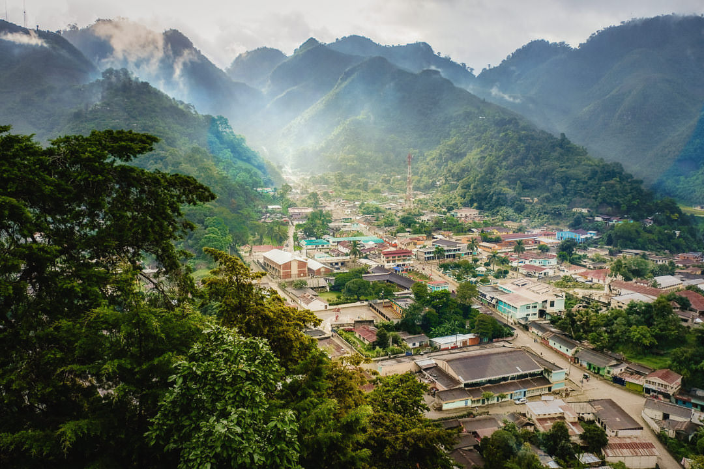

Senahu Guatemala
Senahú (often written Senahú/Senahu) is a small mountain town
and municipality in Guatemala’s Alta Verapaz department,
perched above the lush Polochic Valley.
It’s predominantly Q’eqchi’ Maya, so you’ll hear Q’eqchi’
alongside Spanish in daily life, and see traditional dress,
communal markets, and festivals that blend Maya and Catholic traditions.
The landscape is steep, green, and humid—think cloud-forest hills,
coffee and cardamom plots, rivers and waterfalls—with a cool,
rainy climate much of the year.
The town center is compact and rural in character,
and it’s reached by winding roads from Cobán and neighboring Polochic communities;
agriculture (especially coffee and cardamom), small trade,
and transport services anchor the local economy.
